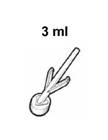
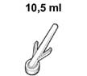
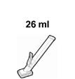

RÉSUMÉ DES CARACTÉRISTIQUES DU PRODUIT
ANSM - Mis à jour le : 10/12/2013
CHLORAPREP COLORE, solution pour application cutanée
2. COMPOSITION QUALITATIVE ET QUANTITATIVE
Gluconate de chlorhexidine ............................................................................................................ 20,00 mg
Alcool isopropylique ........................................................................................................................ 0,70 mg
Pour 1 ml de solution.
Pour la liste complète des excipients, voir rubrique 6.1.
Solution pour application cutanée.
Solution orange.
4.1. Indications thérapeutiques
Ce médicament est utilisé pour désinfecter la peau avant une intervention médicale invasive.
4.2. Posologie et mode d'administration
Le CHLORAPREP COLORE, solution pour application cutanée peut être utilisé chez tous les patients sans restriction d'âge. Néanmoins, il n'est pas recommandé d'utiliser le CHLORAPREP COLORE, solution pour application cutanée chez les enfants de moins de 2 mois.
Un applicateur contient 3 ml, 10,5 ml ou 26 ml de solution alcoolique de CHLORAPREP COLORE, solution pour application cutanée.
Le choix de l'applicateur dépend de l'intervention invasive à réaliser et de la décision du médecin.
|
Applicateur |
Zone de couverture maximale (cm x cm) |
Pour les procédures telles que: |
|
 |
15 x 15 |
· Insertion et maintenance d'un cathéter veineux central et médian · Nettoyage d'un site de dialyse péritonéale · Interventions chirurgicales mineures et majeures |
|
 |
25 x 30 |
· Mise en place d'un implant · Mise en place ou retrait d'une prothèse · Insertion et maintenance d'un cathéter veineux central et d'un cathéter central intravasculaire périphérique et médian |
|
 |
50 x 50 |
· Cathétérisation cardiaque, dont ceux réalisées en milieux spécialisés · Procédure de radiologie interventionnelle |
Retirez l'applicateur de son enveloppe et tenez-le avec l'éponge dirigée vers le bas. Pressez délicatement l'applicateur pour casser l'ampoule contenant la solution antiseptique, qui sera libérée sur l'éponge en un flux contrôlé (pour l'applicateur de 26 ml, il faut appuyer sur le levier). L'ampoule cassée est maintenue en toute sécurité à l'intérieur de l'applicateur. L'éponge doit être pressée délicatement sur la peau du patient pour appliquer la solution antiseptique. Badigoner la peau avec l'éponge pendant 30 secondes. L'applicateur de 26 ml comporte deux tampons. Nettoyez le nombril avec les tampons fournis si nécessaire (humectez les tampons en les appliquant sur l'éponge imbibée de l'applicateur). Laissez sécher la zone couverte.
Il est recommandé de laisser le CHLORAPREP COLORE, solution pour application cutanée sur la peau après l'intervention afin que l'activité antimicrobienne soit continue. La coloration de la peau s'effacera progressivement. Pour l'enlever, l'utilisation du savon et de l'eau, ou de l'alcool est requise.
Ce médicament est contre-indiqué chez les patients ayant présenté une hypersensibilité à la chlorhexidine, à l'alcool isopropylique ou au jaune orangé S (E110).
4.4. Mises en garde spéciales et précautions d'emploi
Réservé à un usage externe sur une peau saine.
La solution est irritante pour les yeux et les muqueuses. Il convient donc de la tenir éloignée de ces zones. En cas de contact de la solution avec les yeux, rincer immédiatement et abondamment à l'eau.
La solution ne doit pas être utilisée sur des plaies cutanées ouvertes, sur une peau écorchée ou chez des enfants de moins de 2 mois. En outre, le contact direct avec du tissu nerveux ou l'oreille moyenne doit être évité.
Tout contact prolongé de la peau avec des solutions alcooliques doit être évité.
La solution est inflammable. Ne pas l'utiliser avec des procédures d'électrocautère ou des sources d'inflammation avant séchage complet.
Retirer tous les matériaux, draps et blouses imbibés avant de poursuivre l'intervention. Ne pas laisser la solution stagner.
Il est important de s'assurer que la bonne méthode d'application est strictement observée (voir la section 4.2 ci-dessus). Si la solution est appliquée de manière trop vigoureuse sur une peau très fragile ou sensible, ou en cas d'utilisation répétée, une réaction locale cutanée peut se produire (érythème ou inflammation, prurit, peau sèche et/ou irrégulière et douleur au niveau du site d'application). Dès les premiers signes d'une réaction cutanée locale, arrêter d'appliquer le CHLORAPREP COLORE, solution pour application cutanée.
4.5. Interactions avec d'autres médicaments et autres formes d'interactions
L'alcool ne doit pas entrer en contact avec certains vaccins ou certaines injections pour test cutané (tests épicutanés). En cas de doute, consultez la notice du vaccin.
Il n'existe aucun risque connu lié à l'utilisation de ce produit chez les femmes enceintes ou allaitantes.
4.7. Effets sur l'aptitude à conduire des véhicules et à utiliser des machines
Aucun effet rapporté.
Dans de très rares cas (<1/10 000), des réactions allergiques ou d'irritation cutanée à la chlorhexidine, à l'alcool isopropylique et au jaune orangé S (E110) ont été rapportées, notamment: un érythème, un rash (érythémateux, papuleux ou maculopapuleux) un prurit et des cloques ou des ampoules sur le site d'application. Parmi les autres symptômes locaux figurent une sensation de brûlure, une douleur et une inflammation de la peau.
Dès les premiers signes d'une réaction cutanée locale, arrêter d'appliquer le CHLORAPREP COLORE, solution pour application cutanée.
Aucun cas de surdosage n'a été rapporté avec ce produit.
5. PROPRIETES PHARMACOLOGIQUES
5.1. Propriétés pharmacodynamiques
Classe pharmacothérapeutique: Code ATC D08AC52 (chlorhexidine en association).
Mode d'action:
Le gluconate de chlorhexidine est un biguanide cationique. Son activité antimicrobienne est due à une interaction non spécifique avec les phospholipides acides de la membrane cellulaire et à la précipitation du contenu de la cellule. Il a un effet bactéricide ou bactériostatique sur un grand spectre de bactéries à Gram positif et à Gram négatif. Il est relativement inefficace contre les mycobactéries. Il inhibe certains virus et se révèle actif contre certains champignons. Il est inactif contre les spores bactériennes. Il a un pouvoir résiduel supérieur par rapport aux antiseptiques cutanés actuellement disponibles. Le gluconate de chlorhexidine a un pouvoir liant fort avec la peau et un pouvoir résiduel cutané documenté à 48 heures. Le gluconate de chlorhexidine n'est pas neutralisé en présence de substances organiques.
L'alcool isopropylique est un antiseptique bactéricide à action rapide et à large spectre, mais il n'est pas considéré comme persistent. Il semble agir selon un mécanisme de dénaturation des protéines.
CHLORAPREP COLORE, solution pour application cutanée est une association de gluconate de chlorhexidine à 2 % et d'alcool isopropylique à 70 %, qui est efficace pour réduire rapidement et de façon persistante les charges bactériennes sur diverses parties du corps pour un large spectre d'organismes. L'alcool isopropylique (70 %) assure la destruction immédiate des microorganismes transitoires et résidents sur la couche cornée, et le gluconate de chlorhexidine (2 %) se lie aux couches superficielles de cellules de l'épiderme et exerce un effet antimicrobien résiduel (persistant) qui empêche la recroissance des microorganismes.
Des études cliniques avec 2 % de gluconate de chlorhexidine dans 70 % d'alcool isopropylique ont montré que cette association a une efficacité égale ou similaire pour réduire la charge bactérienne cutanée et des effets antibactériens plus soutenus sur des périodes plus longues après application, comparé aux composants utilisés seuls et aux autres antiseptiques fréquemment utilisés tels que la polyvidone iodée.
CHLORAPREP COLORE, solution pour application cutanée répond aux normes européennes concernant les désinfectants chimiques et les produits antiseptiques:
Norme EN 1040 - Activité bactéricide de base (phase 1)
Norme EN 1275 - Activité fongicide de base (phase 1)
Norme EN 13727 - Activité bactéricide (phase 2/étape 1)
Norme EN 13624 - Activité fongicide (phase 2/étape 1)
|
Souche |
Temps de mise en contact |
Conditions |
Résultat |
Critère satisfait |
|
|
Pseudomonas aeruginosa |
5 min |
100 %, 75 %, 50 % |
Réduction de log >5,69 |
EN 1040 |
|
|
Staphylococcus aureus |
5 min |
100 %, 75 %, 50 % |
Réduction de log >5,5 |
EN 1040 |
|
|
Candida albicans |
15 min |
100 %, 75 %, 50 % |
Réduction de log >4,25 |
EN 1275 |
|
|
Enterococcus hirae |
5 min |
100 %, 75 %, 50 % dans une solution propre de sérum-albumine bovine à 0,3 g/l |
Réduction de log >5,7 |
EN 13727 |
|
|
Pseudomonas aeruginosa |
5 min |
100 %, 75 %, 50 % dans une solution propre de sérum-albumine bovine à 0,3 g/l |
Réduction de log >5,5 |
EN 13727 |
|
|
Staphylococcus aureus |
5 min |
100 %, 75 %, 50 % dans une solution propre de sérum-albumine bovine à 0,3 g/l |
Réduction de log >5,7 |
EN 13727 |
|
|
Candida albicans |
15 min |
100 %, 75 %, 50 % dans une solution propre de sérum-albumine bovine à 0,3 g/l |
Réduction de log >4,17 |
EN 13624 |
|
|
Aspergillus brasiliensis |
60 min |
100 % |
Réduction de log >4,26 |
EN 13624 |
5.2. Propriétés pharmacocinétiques
L'absorption de l'alcool isopropylique ou du gluconate de chlorhexidine est très faible sur une peau saine. Aucune étude pharmacocinétique n'a été réalisée avec ce produit.
5.3. Données de sécurité préclinique
Il n'existe aucune donnée préclinique importante pour le prescripteur autre que celles déjà incluses dans le RCP.
Jaune orangé S (E110)
La chlorhexidine n'est pas compatible avec le savon, les produits de blanchiment à hypochlorite et tout autre agent anionique. Les produits de blanchiment à hypochlorite peuvent provoquer l'apparition de taches brunes sur les tissus ayant préalablement été en contact avec des préparations contenant de la chlorhexidine.
A conserver à une température ne dépassant pas 25°C.
A conserver dans l'emballage extérieur d'origine ; l'applicateur reste stérile si l'emballage individuel est intact. Produit Inflammable. Eviter d'exposer le récipient et son contenu à des flammes nues lors de son utilisation, stockage et élimination.
6.4. Précautions particulières de conservation
A conserver à une température ne dépassant pas 25°C.
A conserver dans l'emballage extérieur d'origine; l'applicateur reste stérile si l'emballage individuel est intact.
Produit Inflammable. Eviter d'exposer le récipient et son contenu à des flammes nues lors de son utilisation, stockage et élimination.
6.5. Nature et contenu de l'emballage extérieur
Le ChloraPrep coloré est une solution antiseptique alcoolique stérile contenant du gluconate de chlorhexidine et de l'alcool isopropylique dans un applicateur. Les applicateurs sont composés d'une éponge sans latex fixée sur une poignée/un cylindre en plastique qui maintient une compresse colorée sans latex et une ampoule de verre contenant la solution antiseptique. Les applicateurs de 3 ml et de 10,5 ml comportent chacun une ampoule de verre dans le cylindre en plastique. L'applicateur de 26 ml comprend deux ampoules de verre de 13 ml. Les applicateurs stériles sont emballés individuellement dans un film en éthyl acétate de vinyle.
Ce produit médical est disponible en volumes de 3 ml, 10,5 ml et 26 ml.
Taille d'emballage:
|
3 ml: |
1 applicateur ou 25 applicateurs |
|
10,5 ml: |
1 applicateur ou 25 applicateurs |
|
26 ml: |
1 applicateur |
Toutes les présentations peuvent ne pas être commercialisées.
6.6. Précautions particulières d’élimination et de manipulation
La solution est inflammable. Ne pas l'utiliser en fumant ou à proximité de flammes nues ou de fortes sources de chaleur. Eviter d'exposer le récipient et son contenu à des flammes nues lors de son utilisation, stockage et élimination.
Produit réservé à un usage unique.
Tout produit non utilisé ou déchet doit être éliminé conformément à la réglementation en vigueur.
7. TITULAIRE DE L’AUTORISATION DE MISE SUR LE MARCHE
The Crescent, Jays Close
Basingstoke
Hampshire RG22 4BS
GRANDE-BRETAGNE
8. NUMERO(S) D’AUTORISATION DE MISE SUR LE MARCHE
· 350 332-2 ou 34009 350 332 2 2: 3 ml de solution en ampoule (verre type I) dans un applicateur. Boîte de 1.
· 350 333-9 ou 34009 350 333 9 0: 3 ml de solution en ampoule (verre type I) dans un applicateur. Boîte de 25.
· 350 334-5 ou 34009 350 334 5 1: 10, 5 ml de solution en ampoule (verre type I) dans un applicateur. Boîte de 1.
· 350 335-1 ou 34009 350 335 1 2: 10, 5 ml de solution en ampoule (verre type I) dans un applicateur. Boîte de 25.
· 350 336-8 ou 34009 350 336 8 0: 26 ml de solution en ampoules (verre type I) dans un applicateur. Boîte de 1.
9. DATE DE PREMIERE AUTORISATION/DE RENOUVELLEMENT DE L’AUTORISATION
[à compléter par le titulaire]
10. DATE DE MISE A JOUR DU TEXTE
[à compléter par le titulaire]
Sans objet.
12. INSTRUCTIONS POUR LA PREPARATION DES RADIOPHARMACEUTIQUES
Sans objet.
Médicament non soumis à prescription médicale.